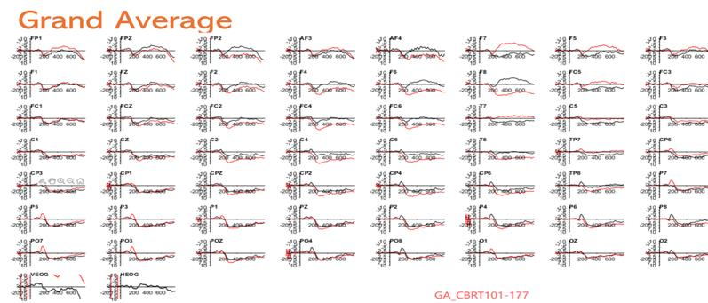

- EEG
- ERP
Aug 2025 – present
READY: Research Enhancing Academic Development in Youth
Research Assistant · PLAY Lab, University of Illinois Urbana-Champaign · PI Dr. Shelby Keye
A longitudinal, multimodal study of how children’s motor competence, physical activity, cognition and academic skills change as they start school.
- Support participant testing and EEG collection, guiding children through study tasks.
- Preprocess EEG in EEGLAB/ERPLAB: data reduction, quality control and manual bad-channel removal.
- Produce grand-average ERP waveforms and topographic maps for group-level interpretation.
- Train undergraduate research assistants in study procedures and testing protocols.
MethodsEEG · ERP · EEGLAB/ERPLAB · MATLAB